Location & Architecture
Images from Avatar
The Asian Inspiration
The Northern and Southern Water Tribes are located at the coldest extremes of the Avatar globe—similar to the Inuit, who are located in Arctic and Subarctic regions of the Earth (Greenland, Siberia, Canada, etc.).
The Southern Water Tribe has ice houses and tents inspired by the Inuits. An ice house, also called an "igloo" or an "aputiak", is a domed wintertime dwelling made out of blocks of ice. The tents, called "tupiq" singular and "tupiit" plural, are summertime tents traditionally made of sealskin, but more recently made of cloth.
Although most of the landscape and housing depicted in the Water Tribes derives from Inuit lanscapes and architecture, the royal palace of the Northern Water Tribe is based on a traditional Hindu structure called a "gopura" or "gopuram", a tower entryway found in front of Hindu temples.

 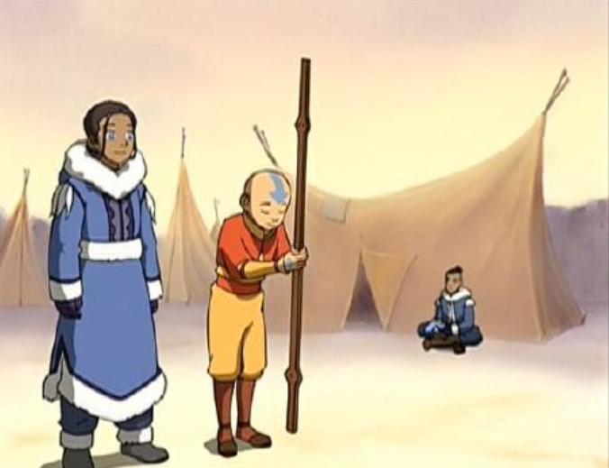
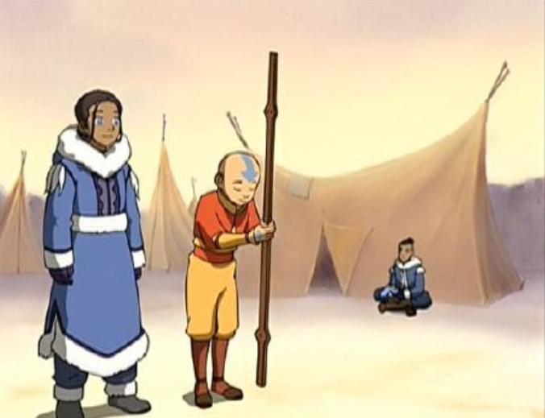


 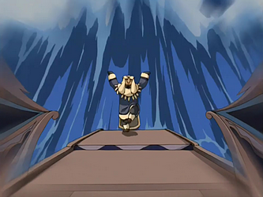
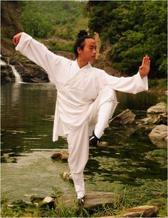
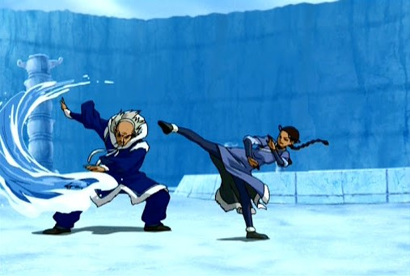
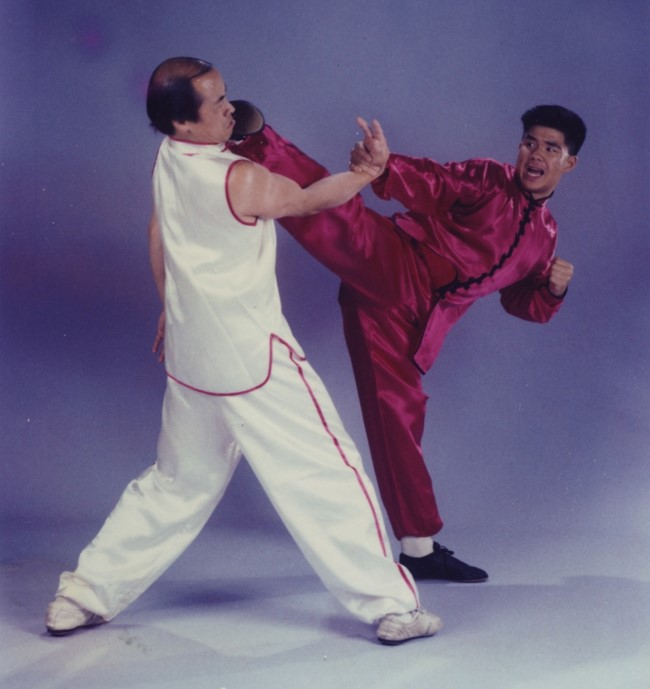
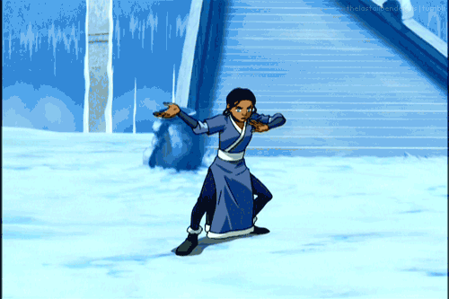
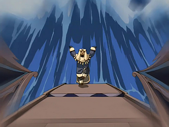
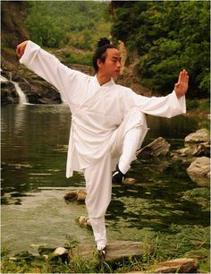
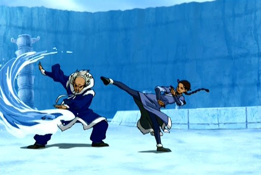
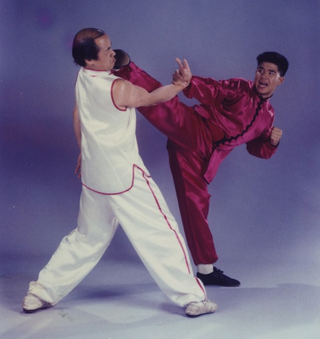
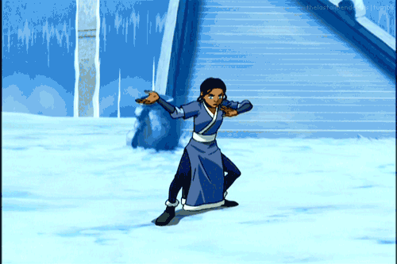


 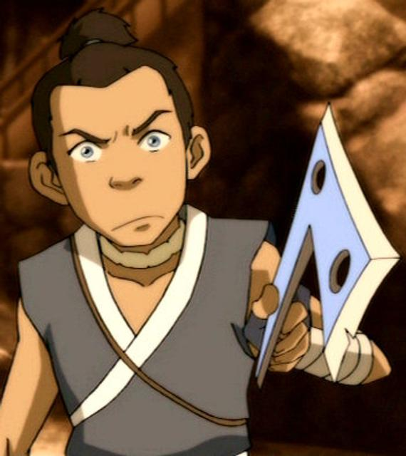
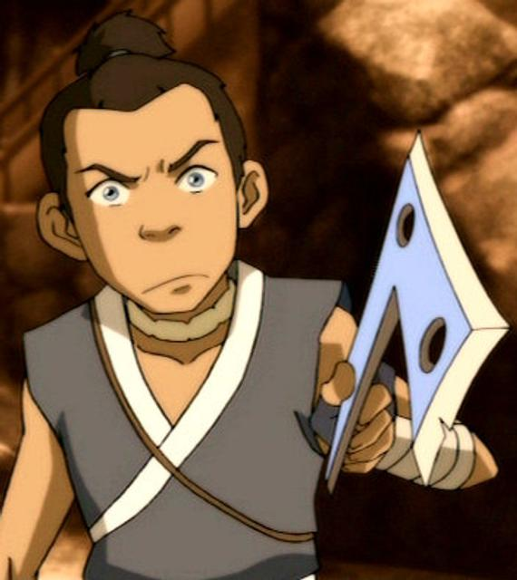